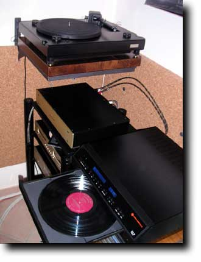
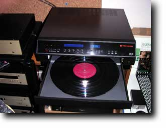

(from the 21/01/05 email, in italian)
Titolo: "ELP Laser Turntable, ovvero il suono della verita'"

Premessa:Quando l'amico Znort mi ha regalato per Natale la "promessa" di portare a casa mia un giradischi laser ELP (www.elpj.com) pensavo fosse uno scherzo. Immaginate la mia sorpresa quando a meta' gennaio mi dice che e' giunto il giorno X! Ho subito telefonato a mia moglie di accendere l'impianto, prima di andare al lavoro, poiche' un 7 ore di riscaldamento sono proprio quello che serve alle valvole dei miei CJ per farsi onore.
Messa:
Arrivano gli ospiti con il curioso "scatolone", pochi convenevoli, giusto qualche brano suonato dal mio Kuzma+Benz LP per farsi "le orecchie" al suono dell'impianto e poi si collega all'ingresso del mio pre-phono l'uscita dell'ELP. Gia' da subito si capisce che e' "un'altra cosa". Non ci sono paragoni, e' un altro tipo di sorgente, un altro tipo di suono.
Partiamo dai difetti: il nostro lettore laser e' sensibilissimo a qualsiasi cosa sia finita dentro i solchi, come le particelle di polvere attaccatesi in profondita' (quando una puntina di 5x60 micron poggia su una piccola area con un peso di 2g si sviluppano pressioni altissime, che generano alte temperature, tali da "fondere insieme" particelle di polvere e vinile). Non c'e' spazzola che sia in grado di togliere gli "stick e stock" dalla mia St. James Infirmary ("Satchmo plays King Oliver", Audio Fidelity ST91058), che e' stata suonata tante volte proprio perche' e' un riferimento. Ma ad esempio con Needed Time di Eric Bibb ("Spirit & the Blues", Opus3 LP19401), che essendo un 45 rpm l'ho ascoltato pochissimo, questo problema degli stick e' molto meno grave, segno che se un disco fosse suonato sempre con l'ELP, sin da nuovo, probabilmente non avrebbe nessun problema (magari dopo una bella lavata).
Eppure se uno riesce a "non farci caso" il suono che esce e' molto, molto... speciale. Innanzitutto colpisce la risposta in frequenza sugli altissimi: non c'e' l'inerzia di un cantiler meccanico da spostare e quindi la risposta e' immediata. Con le testine tradizionali c'e' sempre il "fine tuning" dello smorzamento: una testina piu' smorzata (maggior peso o minor impredenza di carico) traccia dei bassi con piu' corpo, metre una meno smorzata riesce a spingersi in alta frequenza con bassissima distorsione. In questo caso, invece, ci sono sono TUTTE le frequenze riprodotte al meglio. Questo senso di immediatezza non si presenta solo nell'estensione verso le alte frequenze, ma in generale su tutti i transienti. Un attacco di contrabbasso non l'avevo mai sentito in modo cosi' "le corde pestate sul legno" come questa volta!
Non ci sono limiti? Purtroppo ci sono, oltre alla iper-sensibilita' alla polvere. E questi limiti saltano fuori con uno dei mostri sacri della storia della registrazione: il Mercury SR90313 "Rapsodie Espagnole" di Ravel, diretto da Paray. In questo caso i solchi a maggior modulazione (nella seconda parte) sono troppo "energici" per venir fedelmente tracciati dal servomeccanismo del lettore laser. Si rischia lo "scavalcamento" del solco e comunque i passaggi piu' forti vengono un po' distorti. C'e' da dire, come attenuante, che anche questo disco e' stato ascoltato piu' volte con uno stilo tradizionale e puo' essere che sia stato quest'ultimo a "lasciare la traccia del suo passaggio" sui solchi. Insomma avrei voluto provarlo su una copia nuova di zecca.
Da quanto ho capito l'ELP possiede 2 lettori laser: il primo serve proprio per "tracciare" il solco (e utilizza la retroazione, e un convertitore D/A con un microprocessore per spostare al meglio il servo), mentre il secondo e' il vero e proprio lettore analogico, che legge le pareti laterali dei solchi e le tramuta nel segnale audio. Se e' vero che questo lettore laser "non ha inerzia", e' pur sempre vero che il servo deve seguire il solco, e quando le modulazioni arrivano ai record dei grandi Mercury... e' dura per tutti!
Conclusioni:

Insomma, come va?Bene! L'ideale sarebbe metterlo in serie ad una ottima lavadischi come la Loricraft e magari suonare gli LP da quando sono nuovi solo con l'ELP. Infatti, e' come un potente microscopio che LEGGE i solchi, e solo adesso mi rendo conto di quanti graffi, polvere e schifezze vadano a danneggiare i solchi quando vengono suonati con le puntine tradizionali.
A parte questo, il suono puo' apparire un po' "duro" nel senso di qualcosa di molto piu' simile ad un nastro master che ad un disco riprodotto. Se volete e' un suono piu' "vero", ma il suono "vero" e' anche il piu' "giusto"?
La domanda non e' banale, perche' se avete un po' di esperienza di registrazione saprete che i tecnici del suono incidono sempre pensando a quale sara' il risultato finale ascoltato con impianti "tradizionali", e agiscono di conseguenza. Se volete sapere cosa c'e' dentro i vostri solchi l'ELP e' la macchina migliore che io conosca. Se pero' volete godervi la musica risprodotta dagli LP, forse esistono giradischi/bracci e testine con un risultato piu' piacevole.
P.S. Part of this text has been published by VideoHi-Fi n15 in this article,written by Znort:
Tino © May 2007